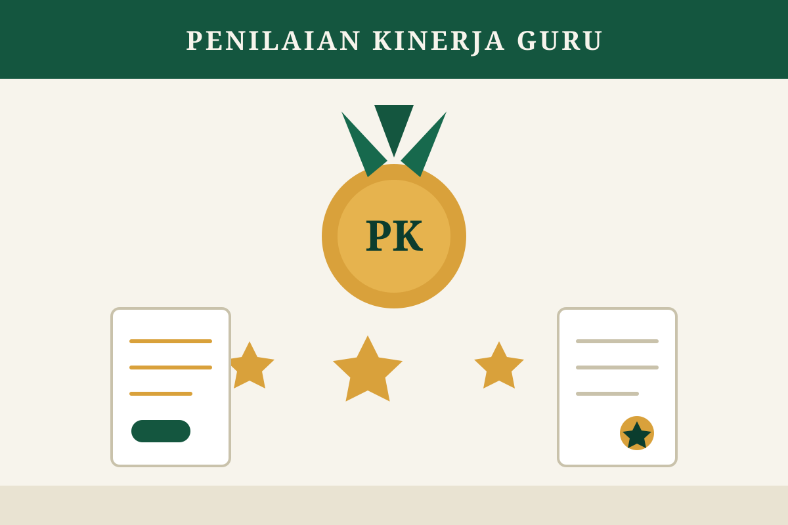
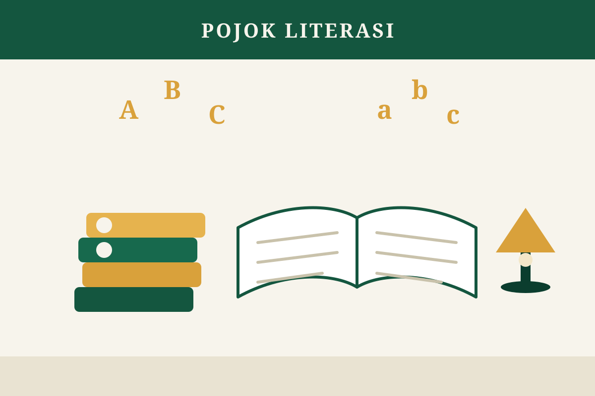
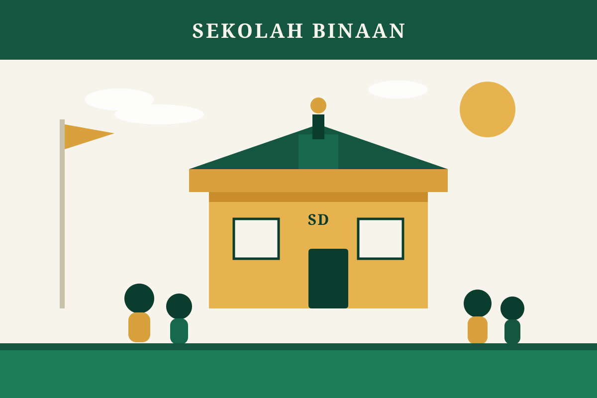

Klik gambar untuk memperbesar. Pengelola dapat mengganti berkas di folder
assets/gallery/ dengan foto dokumentasi asli (format JPG/PNG).
Kirimkan foto kegiatan sekolah Anda untuk ditampilkan di galeri website kecamatan.